Năm học 2026–2027 · Học kỳ 1
Trường Đại học Công nghệ · Đại học Quốc gia Hà Nội
Chọn quyết định và tham số để tối ưu một tiêu chí.
Biểu diễn sự bất định và quan hệ giữa các đại lượng.
Hai phần kết nối trong việc xây dựng và học mô hình từ dữ liệu.
| Thành phần | Cách thức | Trọng số |
|---|---|---|
| Kiểm tra thường xuyên | Câu hỏi kiểm tra ngắn; bài tập cá nhân, nhóm; bài kiểm tra thường xuyên. | 20% |
| Kiểm tra giữa kỳ | Bài kiểm tra giữa kỳ. | 20% |
| Kiểm tra cuối kỳ | Một buổi trong tuần 15 và một buổi theo lịch thi. | 60% |
Các thành phần được chấm theo thang điểm 10.
Điều khiển thông minh, hồi quy tuyến tính và hồi quy logistic.
Xác định giả thiết để chứng minh nghiệm tối ưu toàn cục, sự tồn tại và tính duy nhất.
Xây dựng các công cụ lồi cần cho việc chứng nhận.
Áp dụng công cụ lồi cho ba bài toán đã mở đầu.
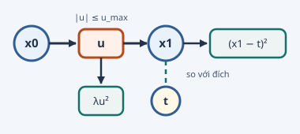
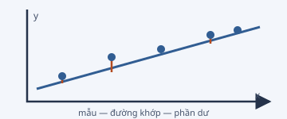
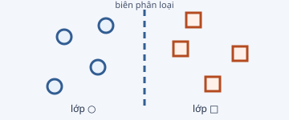
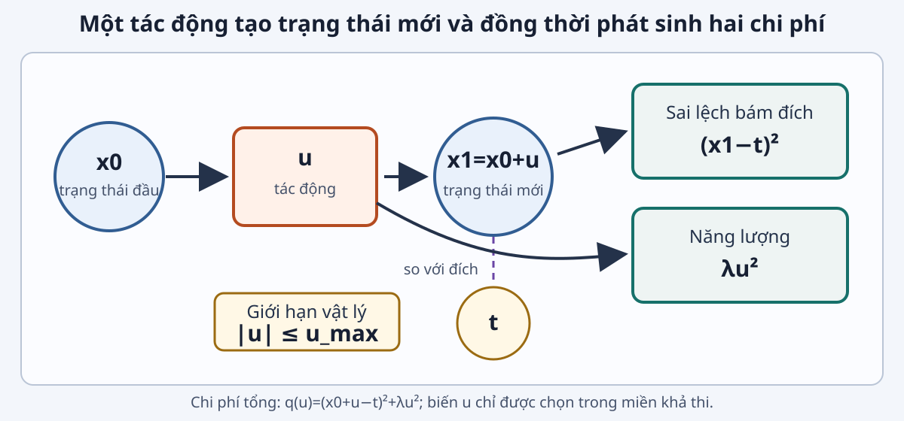
$x_0,t\in\mathbb R$, $u_{\max}\ge0$, $\lambda\ge0$; $t$ là đích (target)
Chọn $u\in\mathbb R$ sao cho
$(x_0+u-t)^2$: sai lệch tới đích $t$ sau một bước.
$\lambda u^2$: điều hòa độ lớn tác động.
Mô hình: quan niệm chủ quan của con người về thế giới. Ở đây, ta gộp bám đích và năng lượng thành $q(u)$.
Cho $q(u)=\tfrac32u^2-6u+9$ và miền khả thi $C=[-1,1]$.
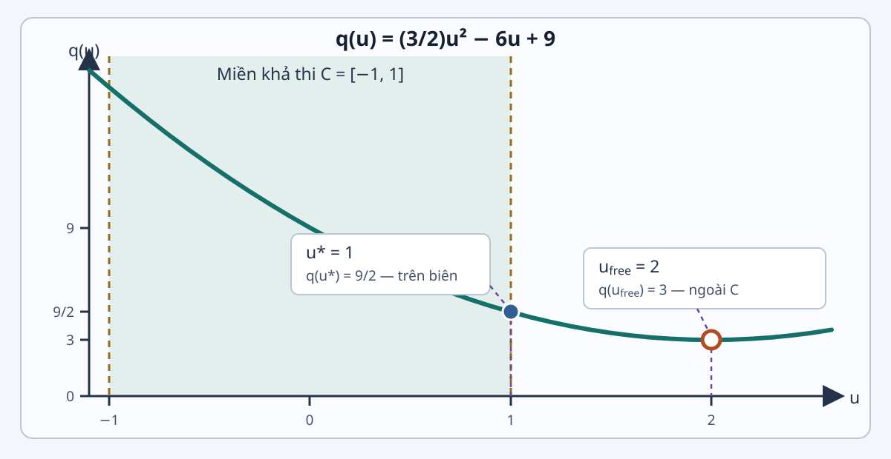
$q(2)=3$, nhưng $2\notin C$.
Nghiệm nằm trên biên phải của $C$.
Từ $u=1$, mọi dịch chuyển khả thi đủ nhỏ đều có $\Delta u\le0$.
$q'(1)=-3<0$ và $\Delta u\le0$, nên $\Delta q \approx q'(1)\Delta u\ge0$.
Điều kiện đạo hàm bằng không chỉ áp dụng trực tiếp cho nghiệm nằm trong miền trong.
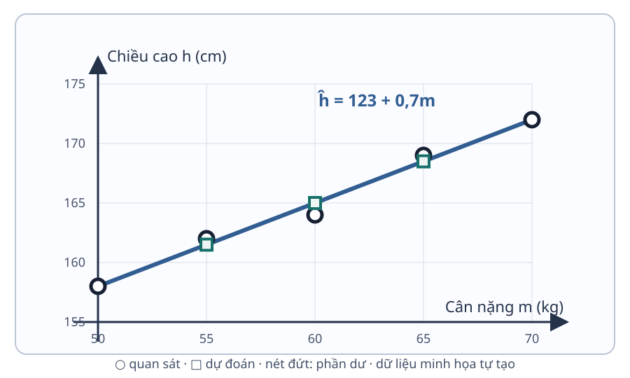
Biết cân nặng $m_i$ (kg), dự đoán chiều cao $h_i$ (cm).
| $m_i$ (kg) | 50 | 55 | 60 | 65 | 70 |
|---|---|---|---|---|---|
| $h_i$ (cm) | 158 | 162 | 164 | 169 | 172 |
$\widehat h_i=x_i^Tw=b+a m_i$.
$X\in\mathbb R^{n\times d}$, $w\in\mathbb R^d$, $y\in\mathbb R^n$.
Mỗi hệ số $w_j$ biểu diễn mức ảnh hưởng của cột đặc trưng $j$ trong mô hình.
Cột đầu toàn số $1$ tạo hệ số chặn; các cột còn lại mang các đặc trưng đo được.
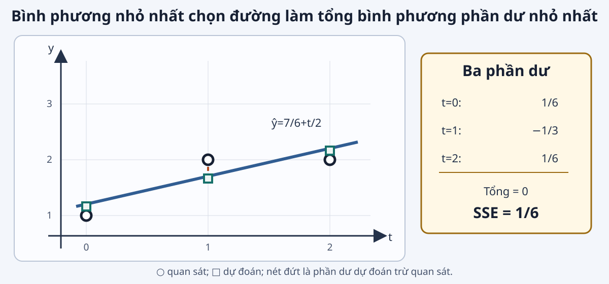
Cột đầu của $X$ toàn số $1$ nên $b$ là hệ số chặn.
$b^*=7/6$ là hệ số chặn; $a^*=1/2$ là hệ số góc.
Có thể giữ nguyên bằng cách chia cùng một hệ số cho hai cột trùng nhau.
Nhiều cặp hệ số tạo cùng $Xw$, nên $w$ không còn được xác định duy nhất.
Một bài toán có thể đạt cùng giá trị tốt nhất tại nhiều nghiệm.
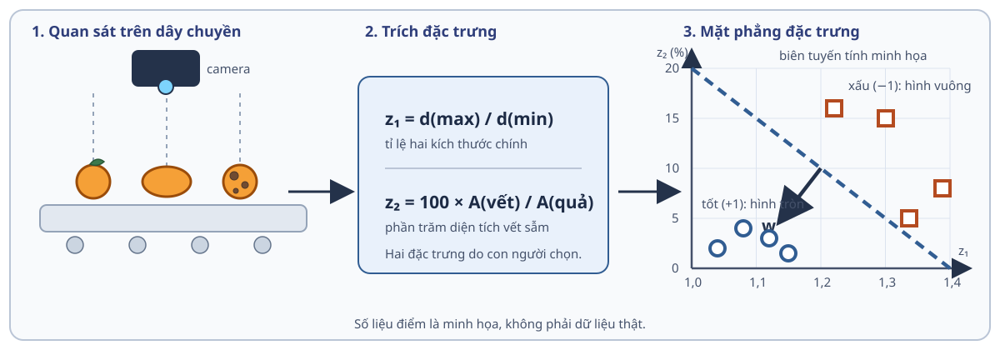
$z_1=d_{\max}/d_{\min}$: tỉ lệ hai kích thước chính.
$z_2=100\,A_{\text{vết}}/A_{\text{quả}}$: tỉ lệ diện tích theo phần trăm.
$y=+1$: tốt; $y=-1$: xấu.
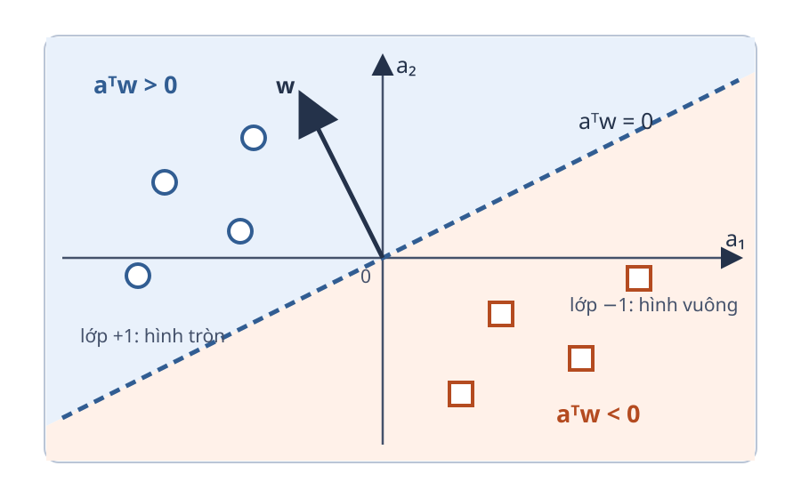
Với $a_i\in\mathbb R^d$ và $y_i\in\{-1,+1\}$, mô hình cho điểm số $a_i^Tw$.
Biên $a^Tw=0$ chia mặt phẳng thành hai miền dự đoán.
Dấu dự đoán khớp nhãn.
Mẫu nằm trên biên quyết định.
Dấu dự đoán sai nhãn.
Biên có dấu gom đặc trưng, nhãn và tham số vào một đại lượng cần tăng.
$m$ tăng thì $\ell(m)$ giảm.
Biến quyết định: $w\in\mathbb R^d$.
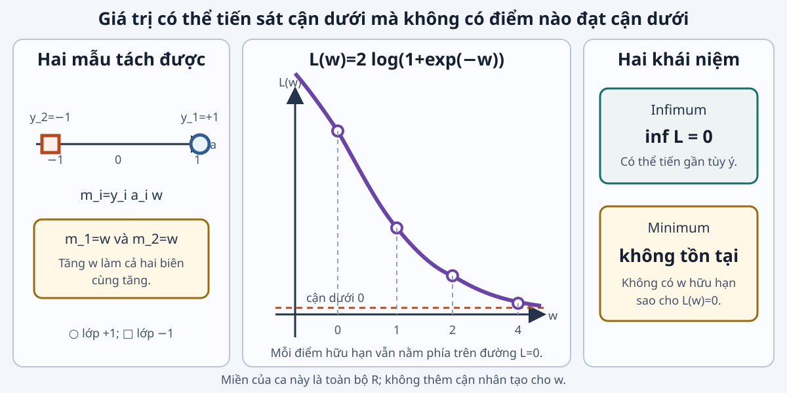
Hai mẫu: $(a_1,y_1)=(1,+1)$, $(a_2,y_2)=(-1,-1)$.
| $w$ | $L(w)$ |
|---|---|
| 0 | 1,386 |
| 1 | 0,627 |
| 2 | 0,254 |
| 4 | 0,036 |
Các giá trị tiến gần cận dưới tùy ý.
Phải là một điểm hữu hạn đạt đúng cận dưới.
Một mục tiêu có thể có cận dưới hữu hạn nhưng không có nghiệm.
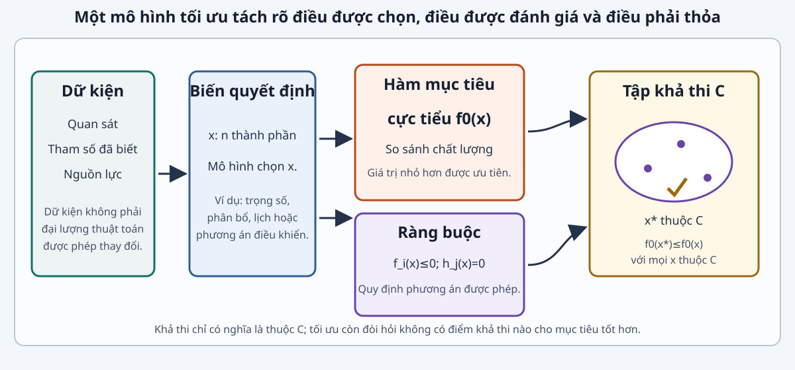
| Bài toán | Biến $x$ | Mục tiêu $f_0$ | Miền $C$ |
|---|---|---|---|
| Điều khiển | $u\in\mathbb R$ | $(x_0+u-t)^2+\lambda u^2$ | $[-u_{\max},u_{\max}]$ |
| Hồi quy tuyến tính | $w\in\mathbb R^d$ | $\lVert Xw-y\rVert_2^2$ | $\mathbb R^d$ |
| Hồi quy logistic | $w\in\mathbb R^d$ | $\sum_i\log(1+e^{-y_i a_i^Tw})$ | $\mathbb R^d$ |
$x\in C$; chưa so sánh giá trị mục tiêu.
$p^*=\inf_{x\in C}f_0(x)$; cận dưới có thể không đạt.
Có $x^*\in C$ sao cho $f_0(x^*)=p^*$.
Tập nghiệm chỉ gồm một điểm.
Một chứng nhận đúng phải nói rõ đang bảo đảm kết luận nào.
1. $x$ đang xét có khả thi?
2. Tập khả thi $C$ có lồi?
3. Hàm mục tiêu $f_0$ có lồi trên $C$?
4. Điểm ứng viên có tối ưu toàn cục?
5. Nghiệm tối ưu có tồn tại?
6. Nếu tồn tại, nghiệm có duy nhất?
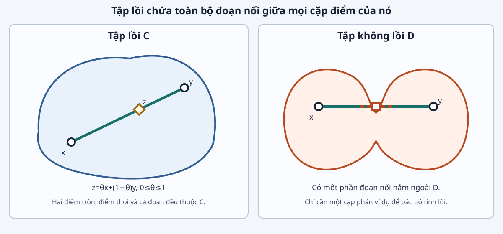
Chọn hai phương án $x,y\in C$.
$z_\theta$ là điểm nằm trên đoạn nối $x$ và $y$.
Miền lồi giữ mọi phương án nội suy trên đoạn ở trong miền.
Phải kiểm tra mọi cặp điểm trong tập.
Phải kiểm tra toàn bộ $\theta\in[0,1]$.
$\mathbb R^d$
Mọi tổ hợp lồi vẫn thuộc $\mathbb R^d$.
$[a,b]$; $l\le x\le u$
Từng tọa độ nằm giữa hai cận.
$\{x\mid Ax=b\}$
Đẳng thức được bảo toàn với tổ hợp lồi $z_\theta$.
$\{x\mid a^Tx\le b\}$
Bất đẳng thức tuyến tính được bảo toàn với $z_\theta$.
Nếu mọi $C_j$ lồi thì $\bigcap_j C_j$ lồi.
Dùng để ghép nhiều ràng buộc.
Nếu $D$ lồi thì $\{x\mid Ax+b\in D\}$ lồi.
Dùng khi ràng buộc áp lên đại lượng dẫn xuất.
| Ví dụ | Miền | Căn cứ |
|---|---|---|
| Điều khiển | $[-u_{\max},u_{\max}]$ | Giao của hai nửa không gian trên $\mathbb R$ |
| Hồi quy tuyến tính | $\mathbb R^d$ | Toàn không gian |
| Hồi quy logistic | $\mathbb R^d$ | Toàn không gian |
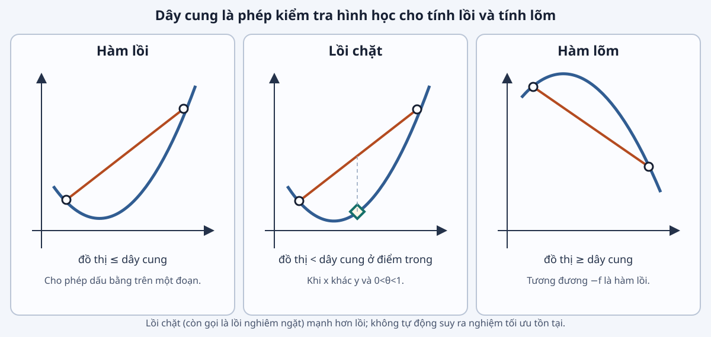
Với $x,y\in C$ và $0\le\theta\le1$:
So sánh $f(z)$ với trung bình có trọng số của $f(x)$ và $f(y)$.
Độ cong phù hợp giữ đồ thị không vượt lên trên dây cung.
Lồi chặt (còn gọi là lồi nghiêm ngặt): dấu bất đẳng thức là nghiêm với $x\ne y$ và $\theta\in(0,1)$.
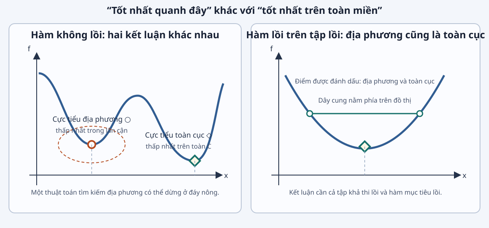
Ý tưởng: nếu có $y\in C$ tốt hơn $x^*$, các điểm trên đoạn từ $x^*$ đến $y$ vừa khả thi, vừa tốt hơn và có thể nằm tùy ý gần $x^*$.
Mọi siêu phẳng tiếp xúc nằm dưới đồ thị.
Nếu $\nabla f(x^*)=0$ thì $x^*$ là cực tiểu toàn cục.
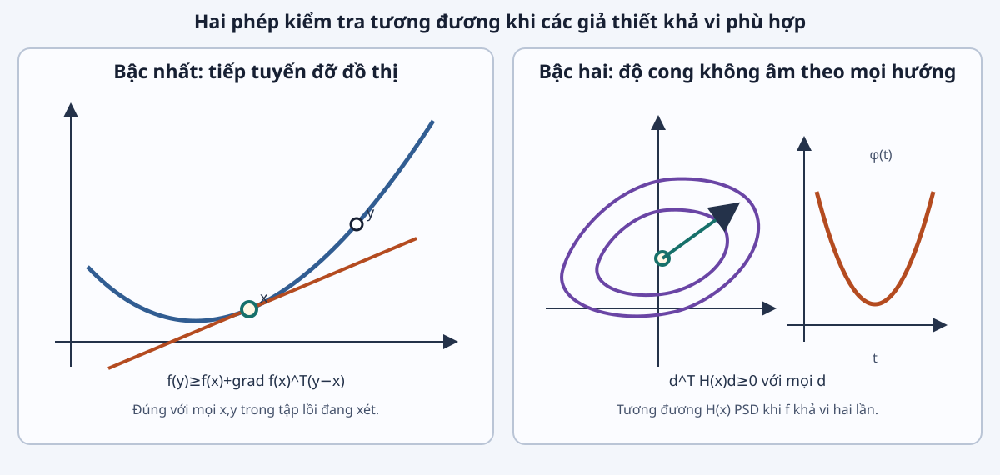
$A\succeq0$ nghĩa là $v^TAv\ge0$ với mọi $v$.
Với $J(w)=\lVert Xw-y\rVert_2^2$:
Ca điều khiển: kiểm tra $q$ trên $\mathbb R$, rồi hạn chế xuống đoạn đóng.
Nếu $f_j$ lồi và $\alpha_j\ge0$ thì $\sum_j\alpha_jf_j$ lồi.
Nếu $f$ lồi thì $x\mapsto f(Ax+b)$ lồi.
Với hồi quy tuyến tính, hàm mất mát là tổng bình phương của các phần dư affine $x_i^Tw-y_i$; với hồi quy logistic, hàm mất mát là tổng các $\ell(y_i a_i^Tw)$.
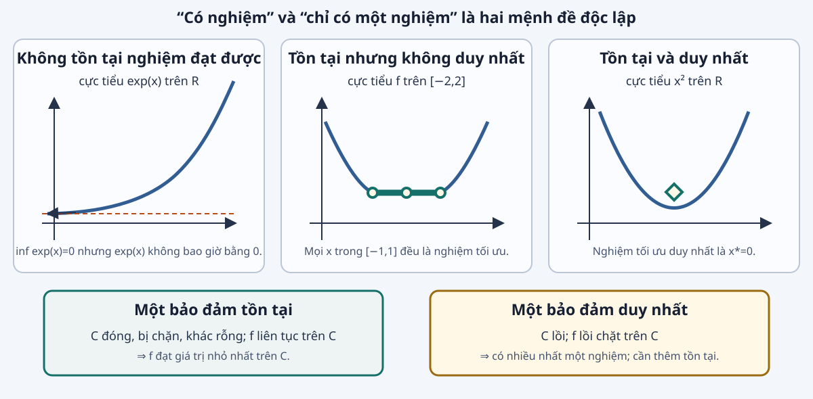
Liên tục trên miền không rỗng, đóng và bị chặn ⇒ đạt giá trị nhỏ nhất.
Liên tục và bức trên miền đóng, không rỗng ⇒ đạt giá trị nhỏ nhất.
$f$ lồi chặt trên miền lồi thì có nhiều nhất một nghiệm.
$C=[-u_{\max},u_{\max}]$ không rỗng, đóng, bị chặn và lồi.
$q$ liên tục, nên đạt giá trị nhỏ nhất.
$q$ lồi chặt nên nghiệm là duy nhất.
Với bộ số đã cho: $u^*=1$ là nghiệm duy nhất dù $q'(1)\ne0$.
Không gian cột $\mathcal R(X)$ là tập con đóng của $\mathbb R^n$.
Hình chiếu của $y$ lên $\mathcal R(X)$ tồn tại, nên có $w^*$ tạo dự đoán tốt nhất.
$J$ lồi chặt khi và chỉ khi $Xv=0$ chỉ có nghiệm $v=0$, tức $X$ có hạng cột đầy đủ.
Đặt $m_i=y_i a_i^Tw$ và $d_i=\ell''(m_i)>0$.
Trong G03, $L(w)\downarrow0$ khi $w\to+\infty$.
Mục tiêu lồi chặt nhưng không đạt giá trị nhỏ nhất.
| Ca | Miền lồi | Mục tiêu lồi | Tồn tại | Duy nhất |
|---|---|---|---|---|
| Điều khiển | Có: đoạn đóng | Lồi chặt | Có | Có |
| Hồi quy tuyến tính | Có: $\mathbb R^d$ | Có | Luôn có | Khi $X$ đủ hạng cột |
| Logistic tách tuyến tính | Có: $\mathbb R^d$ | Lồi; lồi chặt trong ví dụ G03 | Không, nếu chưa chính quy hóa | Không áp dụng |
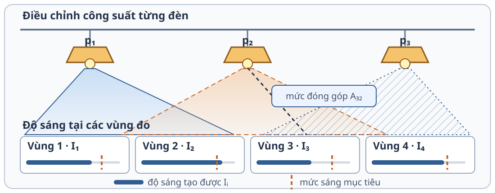
$m$ đèn tạo độ sáng trên $n$ vùng: $I=Ap$, với $A\in\mathbb R_+^{n\times m}$ và công suất $p\in\mathbb R^m$.